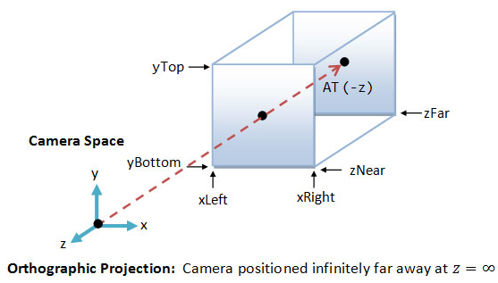

4.2 一些简单的three.js概念
var scene = new THREE.Scene();
通用的属性和方法：
- [属性]
.position：表示摄像头位置，类型是THREE.Vector3，可以用下面的方法来读取和设置其值；//创建一个全新的3维点，并分别赋予其三个坐标轴上的值 var p1 = new THREE.Vector3(); p1.x = 1; p1.y=2; p1.z=3; //也可以用set方法直接设置三个值 p1.set(4,5,6); ... var camera = new THREE.PerspectiveCamera(...); //在创建新的点的时候，可以直接进行初始化 camera.position = new THREE.Vector3(3,8,10); //用distanceTo方法计算两点之间的距离 var distance = camera.position.distanceTo(p1); - [方法]
.lookAt(target:THREE.Vector3)：设置摄像头聚焦的点，注意使用方法：//创建一个全新的3维点，并分别赋予其三个坐标轴上的值 var p1 = new THREE.Vector3(); p1.set(1,2,3); var p2 = new THREE.Vector3(4,5,6); ... var camera = new THREE.PerspectiveCamera(...); camera.position = p1.clone(); //创建一个新的三维点（和p1分开） ... camera.lookAt(p2); //看向一个新的点 camera.lookAt(new THREE.Vector3(0,0,0));
两种可用的摄像头：
- 透视投影摄像机(PerspectiveCamera)：显示效果比较好，立体效果强，缺点是不利于得到比例关系。

var fov=75, aspect=16/9, near=0.01, far=1000; var pcamera=new THREE.PerspectiveCamera(fov, aspect, near, far);
- 平行投影摄像机OrthographicCamera:

var xleft=-5, xright=5, ytop=5, ybottom=-5, znear=0.01, zfar=1000; var ocamera=new THREE.OrthographicCamera( xleft, xright, ytop, ybottom, znear, zfar );
- 环境光-AmbientLight：给所有的物体都打上光，不会造成影子（shadow）。
var color = 0x404040 //光的颜色 , intensity=0.8 //光强度，0（最弱）--1（最强） ; var light = new THREE.AmbientLight( color, intensity ); scene.add( light ); - 平行光-DirectionalLight：沿一个方向发射的平行光，一般用来表示太阳光，可以造成影子（shadow）。
var color = 0x404040 //光的颜色 , intensity=0.8 //光强度，0（最弱）--1（最强） ; var directionalLight = new THREE.DirectionalLight( color, intensity ); scene.add( directionalLight ); //设置平行光的光源位置（其实只是方向，没有距离） directionalLight.position.set(1, 0.5, 0.5).normalize(); //normalize()进行正规化 //设置光源的方向 var target = new THREE.Object3D(); //创建一个光对准的物体 target.position = new THREE.Vector3(1,0,0); //设置其位置 directionalLight.target = target; //光（从其position）指向对准的物体（position） scene.add(target); //场景要把对准的物体加入，以方便进行转换时自动更新 - 点光源-PointLight：点光源，可以造成影子（shadow）。
var color = 0x00ff00, //颜色 intensity = 0.8, //光强度，0（最弱）--1（最强） distance = 20, //光衰到强度为0的距离 decay = 1; //光衰乘积因子 exam4.light = new THREE.PointLight(color, intensity, distance, decay); exam4.light.position.set(0, 0, -0.5); exam4.scene.add(exam4.light); - 聚光光源-SpotLight：聚光光源，可以造成影子（shadow）。
var color = 0x00ff00, //颜色 intensity = 0.8, //光强 distance = 20, //光衰距离 angle = 70 * Math.PI / 180, //光罩角度，最大到90°，π/2 penumbra = 0.1, //半影比例，0-1 decay = 1; //光衰比例 exam5.light = new THREE.SpotLight(color, intensity, distance, angle, penumbra, decay); exam5.light.position.set(0, 0, -0.5); exam5.scene.add(exam5.light); var targetObject = new THREE.Object3D(); targetObject.position.set(0, 0, 0); exam5.scene.add(targetObject); exam5.light.target = targetObject;
- 简单材质-MeshBasicMaterial ：只有颜色，没有明暗，适合光源等简单无需考虑立体效果的物体。
exam6.cube1 = new THREE.BoxGeometry(0.2, 0.2, 0.2); exam6.cube2 = new THREE.BoxGeometry(0.1, 0.1, 0.1); //创建材质 exam6.material1 = new THREE.MeshBasicMaterial({ color: 0x2194ce }); exam6.material2 = new THREE.MeshBasicMaterial({ color: 0x2194ce, wireframe: true //设定为线框显示 }); //创建三维实体（网格单元）：根据几何体和材质 exam6.mesh1 = new THREE.Mesh(exam6.cube1, exam6.material1); //将实体加入场景中 exam6.scene.add(exam6.mesh1); exam6.mesh2 = new THREE.Mesh(exam6.cube2, exam6.material2); exam6.mesh2.position.set(0.3, 0, 0.3); exam6.scene.add(exam6.mesh2); - 普通材质-MeshNormalMaterial ：颜色根据平面的法线向量来定，每个不同夹角的法线的平面颜色不同（不能自定义颜色），适合简单区分立体效果的物体。
exam6.cube1 = new THREE.BoxGeometry(0.2, 0.2, 0.2); exam6.cube2 = new THREE.BoxGeometry(0.1, 0.1, 0.1); //创建材质 exam6.material = new THREE.MeshNormalMaterial(); //创建三维实体（网格单元）：根据几何体和材质 exam6.mesh1 = new THREE.Mesh(exam6.cube1, exam6.material); //将实体加入场景中 exam6.scene.add(exam6.mesh1); exam6.mesh2 = new THREE.Mesh(exam6.cube2, exam6.material); exam6.mesh2.position.set(0.3, 0, 0.3); exam6.scene.add(exam6.mesh2); - 标准材质-MeshStandardMaterial ：根据颜色来设定材质，可以有阴影。
exam8.cube1 = new THREE.BoxGeometry(0.2, 0.2, 0.2); exam8.cube2 = new THREE.BoxGeometry(0.01, 0.01, 0.01); //创建材质： exam8.material = new THREE.MeshStandardMaterial({ color: 0xffff00 }); //创建三维实体（网格单元）：根据几何体和材质 exam8.mesh1 = new THREE.Mesh(exam8.cube1, exam8.material); //将实体加入场景中 exam8.scene.add(exam8.mesh1); exam8.mesh2 = new THREE.Mesh(exam8.cube2, exam8.material); exam8.mesh2.position.set(0.3, 0, 0.3); exam8.scene.add(exam8.mesh2); - 非金属材质-MeshLambertMaterial ：有非金属质感的材质，可以设定贴图，可以有阴影。
exam8.cube1 = new THREE.BoxGeometry(0.2, 0.2, 0.2); exam8.cube2 = new THREE.BoxGeometry(0.01, 0.01, 0.01); //创建材质： exam8.material = new THREE.MeshLambertMaterial({ color: 0xffff00 }); //创建三维实体（网格单元）：根据几何体和材质 exam8.mesh1 = new THREE.Mesh(exam8.cube1, exam8.material); //将实体加入场景中 exam8.scene.add(exam8.mesh1); exam8.mesh2 = new THREE.Mesh(exam8.cube2, exam8.material); exam8.mesh2.position.set(0.3, 0, 0.3); exam8.scene.add(exam8.mesh2); - 金属材质-MeshPhongMaterial ：有金属质感的材质，可以设定贴图，可以有阴影。
exam8.cube1 = new THREE.BoxGeometry(0.2, 0.2, 0.2); exam8.cube2 = new THREE.BoxGeometry(0.01, 0.01, 0.01); //创建材质： exam8.material = new THREE.MeshPhongMaterial({ color: 0xffff00 }); //创建三维实体（网格单元）：根据几何体和材质 exam8.mesh1 = new THREE.Mesh(exam8.cube1, exam8.material); //将实体加入场景中 exam8.scene.add(exam8.mesh1); exam8.mesh2 = new THREE.Mesh(exam8.cube2, exam8.material); exam8.mesh2.position.set(0.3, 0, 0.3); exam8.scene.add(exam8.mesh2);
- BoxGeometry ：长方体。
exam8.cube1 = new THREE.BoxGeometry(0.2, 0.2, 0.2); exam8.cube2 = new THREE.BoxGeometry(0.01, 0.01, 0.01); //创建材质： exam8.material = new THREE.MeshPhongMaterial({ color: 0xffff00 }); //创建三维实体（网格单元）：根据几何体和材质 exam8.mesh1 = new THREE.Mesh(exam8.cube1, exam8.material); //将实体加入场景中 exam8.scene.add(exam8.mesh1); exam8.mesh2 = new THREE.Mesh(exam8.cube2, exam8.material); exam8.mesh2.position.set(0.3, 0, 0.3); exam8.scene.add(exam8.mesh2); - SphereGeometry ：球体。
//创建几何体：球体 var radius = 0.2, //球径 widthSegments = 18, // number of horizontal segments. Minimum value is 3, and the default is 8. heightSegments = 18, //number of vertical segments. Minimum value is 2, and the default is 6. phiStart = 0, //specify horizontal starting angle. Default is 0. phiLength = Math.PI * 2, //specify horizontal sweep angle size. Default is Math.PI * 2. thetaStart = 0, // specify vertical starting angle. Default is 0. thetaLength = Math.PI * 2; //specify vertical sweep angle size. Default is Math.PI. exam12.ball1 = new THREE.SphereGeometry( radius, widthSegments, heightSegments, phiStart, phiLength, thetaStart, thetaLength); exam12.cube2 = new THREE.BoxGeometry(0.2, 0.2, 0.2); //创建材质：普通材质（不同平面被赋予不同颜色） exam12.material1 = new THREE.MeshNormalMaterial(); //创建三维实体（网格单元）：根据几何体和材质 exam12.mesh1 = new THREE.Mesh(exam12.ball1, exam12.material1); //将实体加入场景中 exam12.scene.add(exam12.mesh1); exam12.mesh2 = new THREE.Mesh(exam12.cube2, exam12.material1); exam12.mesh2.position.set(0.21, 0, 0); exam12.scene.add(exam12.mesh2); - CylinderGeometry ：圆柱（圆台）体。

//创建几何体： var radiusTop, //Radius of the cylinder at the top. Default is 20. radiusBottom ,//Radius of the cylinder at the bottom. Default is 20. height ,//Height of the cylinder. Default is 100. radiusSegments,//Number of segmented faces around the circumference of the cylinder. Default is 8 heightSegments,// — Number of rows of faces along the height of the cylinder. Default is 1. openEnded ,//— A Boolean indicating whether the ends of the cylinder are open or capped. Default is false, meaning capped. thetaStart,// — Start angle for first segment, default = 0 (three o'clock position). thetaLength,// — The central angle, often called theta, of the circular sector. The default is 2*Pi, which makes for a complete cylinder. exam12.cylinder = new THREE.CylinderGeometry( radiusTop, radiusBottom, height, radiusSegments, heightSegments, openEnded, thetaStart, thetaLength); //创建材质：普通材质（不同平面被赋予不同颜色） exam12.material1 = new THREE.MeshNormalMaterial(); //创建三维实体（网格单元）：根据几何体和材质 exam12.mesh1 = new THREE.Mesh(exam12.cylinder, exam12.material1); //将实体加入场景中 exam12.scene.add(exam12.mesh1); - ConeGeometry ：圆锥体。
//创建几何体： var radius, //Radius of the cone at the bottom. Default is 20. height ,//Height of the cone. Default is 100. radiusSegments,//Number of segmented faces around the circumference of the cone. Default is 8 heightSegments,// — Number of rows of faces along the height of the cone. Default is 1. openEnded ,//— A Boolean indicating whether the ends of the cone are open or capped. Default is false, meaning capped. thetaStart,// — Start angle for first segment, default = 0 (three o'clock position). thetaLength,// — The central angle, often called theta, of the circular sector. The default is 2*Pi, which makes for a complete cone. exam12.cone = new THREE.ConeGeometry( radius, height, radialSegments, heightSegments, openEnded, thetaStart, thetaLength) //创建材质：普通材质（不同平面被赋予不同颜色） exam12.material1 = new THREE.MeshNormalMaterial(); //创建三维实体（网格单元）：根据几何体和材质 exam12.mesh1 = new THREE.Mesh(exam12.cone, exam12.material1); //将实体加入场景中 exam12.scene.add(exam12.mesh1);